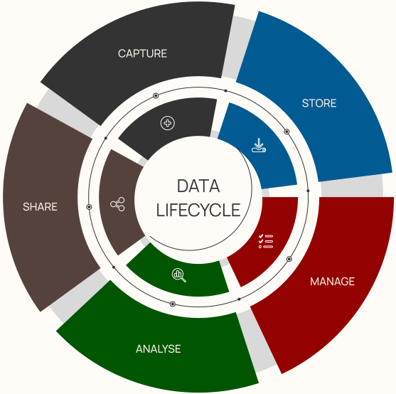

Mastering the data lifecycle
Cottage Labs, your data lifecycle experts, guide you through every crucial phase:
Capture and Storage Excellence: Seamlessly capture data from diverse sources and store it optimally, balancing speed, accessibility, and preservation.
Dynamic Management Workflows: Navigate data's dynamic nature with our custom workflows, ensuring it stays current, relevant, and aligned with your business needs.
Insightful Analysis and Sharing: Unleash the power of your data with analytical prowess and seamless sharing through flexible interfaces, connecting with your audience effortlessly.
Discover the expertise that propels your data through its entire lifecycle with Cottage Labs.
See how we do it in our projects.
